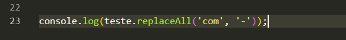
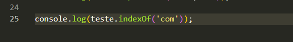
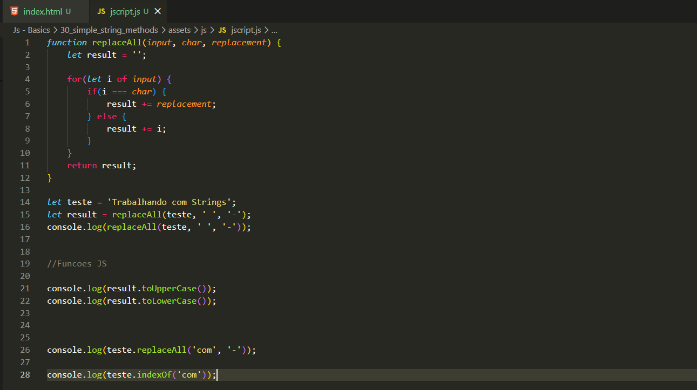

Simple String Methods
Intro
Na aula passada vimos como podemos estar substituindo um caractere por outro. Agora iremos ver como podemos estar substituindo letras minusculas por maiusculas depependendo de nossa necessidade.
Na aula passada vimos como podemos estar substituindo um caractere por outro. Agora iremos ver como podemos estar substituindo letras minusculas por maiusculas depependendo de nossa necessidade.
Uma funcao JS, que passa letras maiusculas para minusculas, usada semelheante ao .length, porem .toLowerCase.
Passa as letras minusculas para maiusculas
Com ele podemos trocar basicamente ao inves de apenas caracteres, podemos trocar frases ou palavras inteiras. ex: replaceAll('com', '-'); ou seja ira tirar o com e substituir por -.

Com ele conseguimos indentificar em que local do indice esta oque desejamos. Ex: indexOf('teste'); ira mostrar em que local do indice esta a palavra teste, tambem pode ser usado com caracteres unicos.

